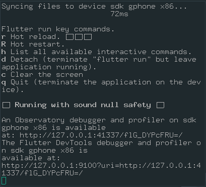
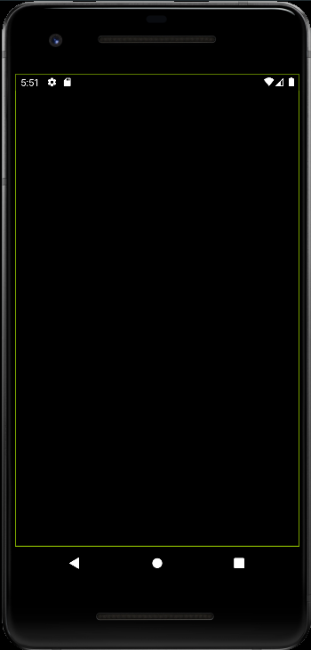
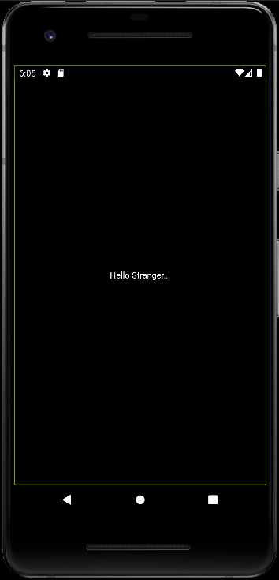

Ao final deste roteiro você será capaz de criar uma aplicação minima em flutter, e entender os primeiros conceitos da construção de layout dele.
Vamos começar um projeto novo com a ferramenta de linha de comando do flutter, com a pasta em nosso PATH podemos criar um novo projeto com o comando a seguir:
flutter create AulaWidgetsBasicos
Feito isso podemos abrir com o nosso editor de preferência a pasta que foi criada,
Teremos uma estrutura que deve ser algo como abaixo:
AulaWidgetsBasicos ├── analysis\_options.yaml ├── android ├── build ├── ios ├── lib ├── pubspec.lock ├── pubspec.yaml ├── README.md ├── test ├── testdrive.iml └── web
Dentro da pasta lib, temos um arquivo chamado main.dart.
Abra esse arquivo e apague todo seu conteúdo, pois iremos reescrevê-lo aos poucos para que possamos entender o que está acontecendo.
Vamos começar com a primeira linha
import "package:flutter/widgets.dart"
Quando utilizamos o import no começo de nosso arquivo, estamos falando para o
“compilador” que queremos utilizar o conteúdo deste pacote em nosso código.
Nesse caso estamos indicando que precisamos dos widgets básicos que o flutter fornece para utilizar em nosso código.
Para isso temos ainda outras duas opções:
package:flutter/material.dart, que irá fornecer widgets bastante comuns que
utilizamos quando estamos fazendo aplicações Android. Material, vem de Material
Design que é o padrão de design estabelecido pelo Google. Você pode consultá-lo
no site oficial material.io.
A outra opção que temos é a packages:flutter/cupertino.dart em que temos
widgets que seguem os padrões de design definidos pela apple. Apple
Design
Seguindo em nosso código, precisamos agora criar o ponto de entrada de nosso projeto, mais conhecido como função main. É a partir dela que nosso projeto começará a ser executado.
import "package:flutter/widgets.dart"
void main(){
runApp(/*TODO*/);
}
Criamos a função main, e ela está apensa chamando a função runApp, mas ainda
não terminamos, por isso o /*TODO*/, essa função, tem como parâmetro um
Widget, que iremos escrever em breve o nosso. O widget que é passado como
parâmetro para a função runApp se torna o Widget raiz de nossa aplicação, e o
Flutter força esse elemento a tomar toda a tela disponível.
Bom vamos então criar um novo widget para ser a raiz do nosso programa, para
isso é preciso criar uma classe, que herde de algum outro widget, vamos começar
pala StatelessWidget, Utilizamos esta classe base quando precisamos criar
elementos que não serão atualizados em “tempo de execução”, isso significa que
ele só depende das condições iniciais para sua construção e não será atualizado,
ou será atualizado muito pouco depois disso.
import "package:flutter/widgets.dart"
void main(){
runApp(/*TODO*/);
}
class PrimeiroElementos extends StatelessWidget{
}
Com o código acima demos o primeiro passo para construir um widget nosso. Precisamos agora definir um construtor para nossa classe, e implementar o método build.
import "package:flutter/widgets.dart"
void main(){
runApp(/*TODO*/);
}
class PrimeiroElementos extends StatelessWidget{
//Construtor
PrimeiroElemento({Key? key}) : super(key : key);
}
Agora definimos o construtor de nossa classe PrimeiroElemento, vamos rever algumas coisas dessa linha.
Temos a seguinte construção {Key? key}, essa é a forma que o DART/FLUTTER usa
para a utilização de parâmetros nomeados, neste caso, estamos criando um
parâmetro de nome key, e que o tipo de Key?, a interrogação indicando que pode
conter um valor nulo.
Um outro exemplo seria {String titulo} nesse caso estamos criando um parâmetro
nomeado titulo, com o tipo String.
Outra parte que precisamos tomar atenção é a : super(key : key). Isso está
chamando o construtor da classe pai, no caso StatelessWidget, e passamos por
parâmetro a key que foi recebida como parâmetro nomeado do nosso construtor.
Agora vamos implementar o método build.
import "package:flutter/widgets.dart"
void main(){
runApp(/*TODO*/);
}
class PrimeiroElementos extends StatelessWidget{
//Construtor
PrimeiroElemento({Key? key}) : super(key : key);
@override
Widget build(BuildContext context){
return Center();
}
}
Para finalizar trocamos o /*TODO*/ em runApp para o construtor da classe que
acabamos de criar.
import "package:flutter/widgets.dart"
void main(){
runApp(PrimeiroElemento());
}
class PrimeiroElementos extends StatelessWidget{
//Construtor
PrimeiroElemento({Key? key}) : super(key : key);
@override
Widget build(BuildContext context){
return Center();
}
}
Agora terminamos de escrever o código mínimo para que possamos criar uma aplicação minima.
Vamos disparar um dispositivo virtual pelo Android-Studio ADV Manager, e então, podemos tentar executar com o seguinte código em nosso terminal com flutter
flutter run
Lembre-se que você deve estar na raiz da pasta do seu projeto para esse comando funcionar.
Se foi feito rudo certo, não teremos erros em nosso terminal:

E teremos uma LINDA tela preta em nosso emulador.

Não se desespere, está certo, a questão é que nosso widget PrimeiroElemento
tem apenas um elemento Center que irá centralizar um outro elementos, em seu
centro vertical e horizontal, mas não temos esse outro elemento no momento.
Vamos adicionar um texto para deixar as coisas um pouco mais interessantes:
import "package:flutter/widgets.dart"
void main(){
runApp(PrimeiroElemento());
}
class PrimeiroElementos extends StatelessWidget{
//Construtor
PrimeiroElemento({Key? key}) : super(key : key);
@override
Widget build(BuildContext context){
var texto = Text("Hello stranger....", textDirection: TextDirection.ltr);
return Center(child: texto);
}
}
Agora inserimos um elemento de texto a nossa aplicação, e o definimos como filho do Center que estávamos usando antes.
No terminal que estamos com o flutter run rodando, pressione r minusculo, para atualizar a sua aplicação.

Na próxima aula, iremos ver com calma os widgets mais básicos do flutter.